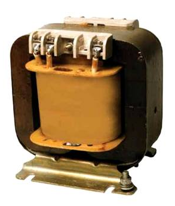

Во время рассмотрения открытия электромагнитной индукции мы обращались к опытам Фарадея. На один сердечник были намотаны две катушки: одна сверху другой, при этом внутренняя катушка оказывалась в магнитном поле внешней катушки (рис. 1.). Это и был первый шаг на пути создания трансформатора.
Рис. 1. Трансформатор
Схема трансформатора впервые появилась в работах Фарадея и Джозефа Генри. Однако ни один учёный не отмечал в возможностях изменение напряжений и тока – трансформирование переменного тока.
30 ноября 1876 г. считается датой рождения первого трансформатора. В этот день П. Н. Яблочков получил патент на изобретение данного устройства. После этого возник научный интерес к изучению переменного тока. И, как следствие, возник интерес к изучению металлических, неметаллических, магнитных материалов и созданию о них теорий.
Рассмотрим некоторые основы теории трансформаторов. Трансформатор – это техническое устройство, предназначенное для преобразования переменного тока, при котором напряжение увеличивается или уменьшается в несколько раз. Любой трансформатор (рис. 2) состоит из системы катушек и сердечника.
|  | |
|---|---|
| Рис. 2. Трансформатор | Рис 3. Схема трансформатора |
Базовый принцип действия трансформатора (рис. 3) состоит в том, что в основе его работы лежит явление электромагнитной индукции. Одну из катушек – первичную – подключают к источнику переменного тока. Протекающий по первичной обмотке переменный ток создаёт переменный магнитный поток, пронизывающий сердечник – магнитопровод. Изменяющийся в сердечнике магнитный поток создаёт ЭДС индукции во второй катушке. Эта ЭДС индукции создаёт во вторичной обмотке переменный ток.
На рис. 4 приведена принципиальная схема трансформатора. Так трансформатор обозначается следующим образом: центральная широкая линия соответствует сердечнику, первичная обмотка, обычно слева, и вторичная обмотка – справа, число полуокружностей в очень грубом приближении символизирует число витков в обмотке.
Рис. 4
Существует два режима работы трансформатора. Рассмотрим ситуацию, при которой вторичная обмотка не замкнута на нагрузку потребителя. Такой режим работы называется холостой ход. При пропускании переменного тока через первичную обмотку в сердечнике возникает переменный магнитный поток. Сердечник устроен таким образом, чтобы магнитный поток полностью оставался внутри этого сердечника. Мгновенное значение ЭДС индукции в любом витке будет равно первой производной магнитного потока со знаком минус.
\( \varepsilon = - \Phi '\) (1)
Если поток меняется по гармоническому закону, то и ЭДС индукции будет меняться по гармоническому закону, но со сдвигом фазы 90°.
\( \Phi = \Phi_0 \cdot cos \omega t \) (2)
\( \varepsilon = \varepsilon_0 \cdot sin \omega t \) (3)
В первичной обмотке с числом витков \( N_1 \) полная ЭДС индукции будет равна произведению мгновенного значения ЭДС на число витков в этой обмотке.
\( \varepsilon_1 = \varepsilon \cdot N_1 \) (4)
Во вторичной обмотке суммарное значение ЭДС также будет равно произведению мгновенного значения ЭДС на число витков во вторичной обмотке.
\( \varepsilon_2 = \varepsilon \cdot N_2 \) (5)
Отношение ЭДС в первичной обмотке к ЭДС в вторичной обмотке равно отношению числа витков в первичной и вторичной обмотках.
\( \frac{\varepsilon_1}{\varepsilon_2} = \frac{N_1}{N_2} \) (6)
Поскольку обычно электрическое сопротивление обмоток трансформатора – достаточно малая величина, которой можно пренебречь, то модуль напряжения на зажимах первичной катушки приблизительно равен ЭДС индукции первичной катушки.
\( |U_1| \approx \varepsilon_1 \) (7)
При холостом ходе вторичная обмотка не замкнута – ток в ней не протекает, следовательно, напряжение между зажимами вторичной обмотки равно ЭДС индукции в этой обмотке.
\( |U_2| = \varepsilon_2 \) (8)
Мгновенные значения ЭДС в обеих обмотках изменяются синфазно: одновременно достигают максимума, минимума и проходят через ноль. Следовательно, отношение ЭДС в обеих обмотках можно заменить на отношение двух действующих напряжений в них. Так, для двух катушек трансформатора отношение числа витков – величина постоянная – коэффициент трансформации (K).
\( \frac{U_1}{U_2} = \frac{N_1}{N_2} = K \) (9)
Если K > 1, напряжение на зажимах вторичной катушки меньше, чем напряжение на зажимах первичной, а трансформатор с таким коэффициентом – понижающий. Если K < 1, напряжение на зажимах вторичной обмотки больше, чем напряжение на зажимах первичной обмотки, и трансформатор – повышающий.
В режиме холостого хода, когда вторичная обмотка не подключена к нагрузке, ЭДС индукции в первичной обмотке практически полностью компенсирует напряжение, подаваемое от источника, и при этом ток в первичной обмотке крайне маленький. В режиме холостого хода ток в первичной обмотке характеризует величину потерь в сердечнике. При этом мощность потерь можно вычислить путём умножения тока холостого хода на напряжение, подаваемое от источника.
Рассмотрим теперь второй режим работы трансформатора – режим с нагрузкой. В этом режиме вторичная обмотка подведена к нагрузке потребителя. При подключении нагрузки во вторичной обмотке возникает электрический ток, который своим магнитным полем препятствует изменению магнитного потока в первичной обмотке. В результате, в первичной обмотке нарушается равенство ЭДС индукции и ЭДС источника. Как следствие, в первичной обмотке начинает возрастать электрический ток. Возрастает он до тех пор, пока магнитный поток не достигнет практически прежнего значения. Увеличение тока в цепи первичной обмотки происходит в соответствии с законом сохранения энергии – потери энергии в катушке, присоединённой ко вторичной обмотке, компенсируются потреблением от источника питания точно такой же энергии. Мощность первичной цепи при нагрузке трансформатора приблизительно равна мощности во вторичной цепи.
\( U_1 \cdot I_1 = P_1 \approx P_2 = U_2 \cdot I_2 \) (10)
Получим, что отношение напряжений на катушках трансформатора приблизительно равно обратному отношению токов в этих катушках:
\( \frac{U_1}{U_2} \approx \frac{l_2}{l_1} = K \) (11)
Таким образом, повышая с помощью трансформатора напряжение в несколько раз, мы во столько же раз уменьшаем ток.
Известно, что для создания трансформаторов необходимо хорошо знать свойства материалов. На сегодня потери в некоторых трансформаторах составляют 2–3% от мощности источника. В крупных силовых трансформаторах эти потери могут иметь большие значения, и для их работы используют мощные системы охлаждения.
1. Трансформаторы – это технические устройства, работающие на явлении электромагнитной индукции и состоящие из нескольких катушек, намотанных на общий сердечник. Трансформаторы предназначены для повышения или понижения напряжения, подаваемого на первичную обмотку.
2. В режиме холостого хода отношение действующих на зажимах катушек напряжений равно отношению числа витков в первичной и вторичной обмотках. Это отношение является числом, постоянным для данного трансформатора, и называется коэффициентом трансформации.
3. В режиме работы с нагрузкой мощности токов в обеих катушках приблизительно равны, и отношение действующих напряжений на зажимах катушек равно обратному отношению токов в этих катушках.